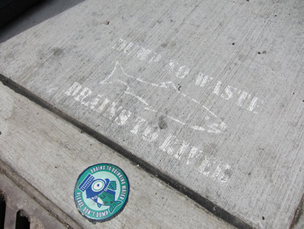

Protect and/or Restore Urban Streams
What is it?
prevent channelization
complete armoring of streams
remove riprap or rock structures
Dissemination of information about conservation issues is important in increasing watershed awareness and knowledge. Communication BMPs provide a way to publicize information about issues to stakeholders and can direct them to ways they can participate in watershed conservation. Increasing a watershed community's awareness of impairments and conservation issues is important in every stage of watershed conservation and restoration because it promotes long-term involvement and protection.
 Storm drain stenciling from Pittsburgh, PA. (photo from TPWD)
{kind=link}
 Wetlands information sign at John Bunker Sands Wetland Center (photo from TPWD)
Wetlands information sign at John Bunker Sands Wetland Center (photo from TPWD)
Conservation Benefits
- Protection of aquatic and terrestrial habitat
- Protection of native species
- Protection of water quality
- Increased knowledge of watershed conservation issues
- Increased participation in conservation activities
Who is involved?
Any stakeholder or group who wants to disseminate information about watershed issues can implement communication BMPs. Depending on the BMP, stakeholders can execute communication BMPs individually or coordinate through partnerships to more effectively circulate information or receive technical guidance and resource support. Partnerships can be created with organizations like local municipalities, non-governmental organizations, state agencies, and federal agencies.
What does it include?
Communication BMPs can include a wide variety of strategies including
- Websites
- Brochures, fliers, or cards
- Putting up signs
- Better product labeling
- Stenciling storm drains
Communication Links